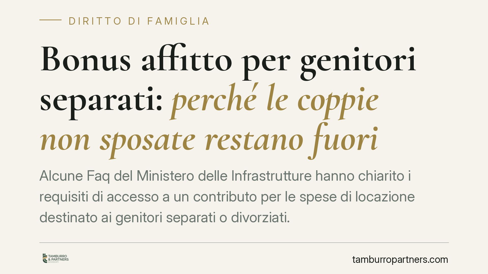

Bonus affitto per genitori separati: perché le coppie non sposate restano fuori
Alcune Faq del Ministero delle Infrastrutture hanno chiarito i requisiti di accesso a un contributo per le spese di locazione destinato ai genitori separati o divorziati. Il punto più discusso: l'esclusione delle coppie non coniugate, pur in presenza di figli e di provvedimenti del tribunale. Una scelta che riapre il tema dell'asimmetria tra tutela del minore e status degli adulti.

Il contesto: un chiarimento ministeriale, non una nuova legge
Premettiamo una precisazione metodologica necessaria. La notizia nasce da alcune Faq (domande frequenti) pubblicate dal Ministero delle Infrastrutture e dei Trasporti, non da un nuovo provvedimento normativo. Le Faq hanno natura meramente interpretativa e divulgativa: orientano l'applicazione della misura ma non hanno valore di fonte del diritto e non vincolano il giudice.
Al momento della stesura, il provvedimento istitutivo primario del contributo (decreto attuativo e relativo stanziamento) va individuato nella sua versione definitiva prima di qualsiasi presentazione di domanda. Invitiamo perciò a trattare come dati da verificare sia l'importo massimo indicato (fino a 6.000 euro) sia il termine di presentazione segnalato (28 ottobre 2026): entrambi circolano in sede divulgativa e vanno riscontrati sul testo ufficiale del provvedimento e sulla modulistica ministeriale.
La cornice sistematica: gli artt. 337-bis ss. c.c.
Per comprendere la portata della scelta ministeriale serve richiamare il quadro codicistico. Gli artt. 337-bis e seguenti del codice civile disciplinano l'esercizio della responsabilità genitoriale e l'affidamento dei figli in caso di separazione, divorzio, scioglimento dell'unione o cessazione della convivenza.
Il principio cardine di questa disciplina è l'equiparazione dei figli: la tutela del minore non dipende dallo status coniugale dei genitori. L'art. 337-bis, infatti, si applica indistintamente ai figli di genitori sposati e non sposati. In sede civile, insomma, il figlio nato fuori dal matrimonio gode delle medesime garanzie.
È proprio qui che si crea la tensione. Il contributo, così come interpretato dalle Faq, àncora l'accesso al beneficio al pregresso vincolo matrimoniale (separazione o divorzio), escludendo le coppie di fatto anche quando esiste un provvedimento del tribunale che regola l'affidamento e il mantenimento dei figli.
L'asimmetria tra tutela del minore e status degli adulti
La conseguenza pratica è una divaricazione evidente. Sul piano della responsabilità genitoriale, l'ordinamento ha progressivamente superato ogni distinzione fondata sul matrimonio. Sul piano dell'accesso a una misura economica collegata proprio alle conseguenze della rottura del nucleo familiare, la distinzione invece riemerge.
Il criterio selettivo non guarda alla condizione del figlio — che resta identica — ma allo status pregresso degli adulti. Un genitore un tempo coniugato può accedere; un genitore mai sposato, con lo stesso onere economico e lo stesso provvedimento di affidamento, no.
Si tratta di una scelta di politica legislativa che potrà essere oggetto di rilievi sul piano della ragionevolezza e della parità di trattamento. Non è escluso che la questione venga sollevata in sede contenziosa o che il legislatore intervenga in autotutela. Allo stato, tuttavia, il requisito è quello indicato.
Implicazioni pratiche per il destinatario tipo
Se sei un genitore separato o divorziato con un provvedimento del tribunale e sostieni spese di locazione per garantire un alloggio idoneo ai figli, rientri potenzialmente tra i destinatari. Se invece eri legato al partner da una convivenza di fatto, allo stato risulti escluso, a prescindere dall'esistenza di un provvedimento di affidamento.
La condizione patrimoniale e i limiti reddituali, oltre ai requisiti sull'immobile, saranno dettagliati dal provvedimento ufficiale e dalla modulistica: è su quei testi che va misurata l'ammissibilità concreta.
Cosa fare in concreto
- Verifica il provvedimento ufficiale. Non fermarti alle Faq: reperisci il testo istitutivo della misura e la modulistica ministeriale, dove trovi importo, requisiti e termini effettivi.
- Controlla il tuo status. Accerta se il tuo caso rientra tra separazione o divorzio (potenzialmente ammessi) o convivenza di fatto cessata (allo stato esclusa).
- Raccogli la documentazione. Tieni pronti provvedimento del tribunale, contratto di locazione registrato e ricevute di pagamento dei canoni.
- Annota il termine corretto. Verifica la scadenza sul provvedimento ufficiale e non rinviare: le finestre di domanda sono spesso rigide.
- Valuta un confronto professionale se la tua situazione familiare è atipica (unioni civili sciolte, affidamenti complessi), per capire se e come inquadrarla.
---
*Contributo informativo a cura di Tamburro & Partners Avvocati - Avv. Giuseppe Tamburro. Non costituisce parere legale.*
Ogni famiglia ha il suo equilibrio.
Separazione, divorzio, affidamento, assegno: se vuoi un confronto riservato su una specifica situazione, scrivi allo studio. Ti rispondiamo entro un giorno lavorativo.